A
ROUTE 01
토도구미의 신입
藤堂組
entry-todogumi.png
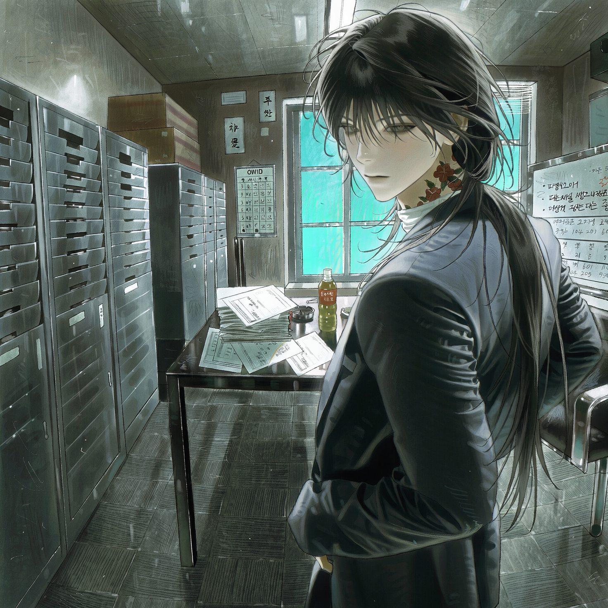
첫 출근이었다.
엘리베이터는 석 달째 고장 나 있었고,
사무실은 4층에 있었다.
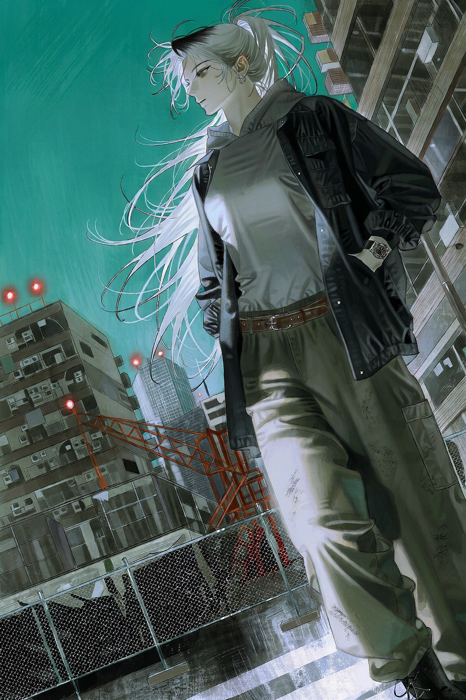
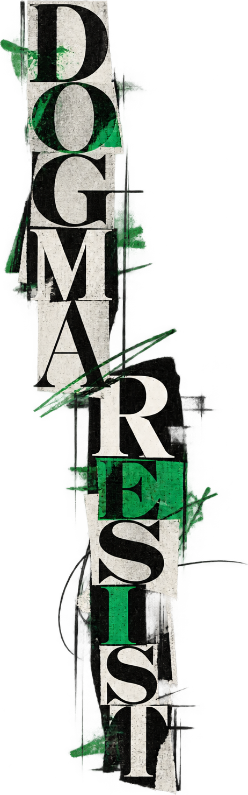
SCROLL AFTER ENTRY
01
CITY FILE
川口 · 埼玉
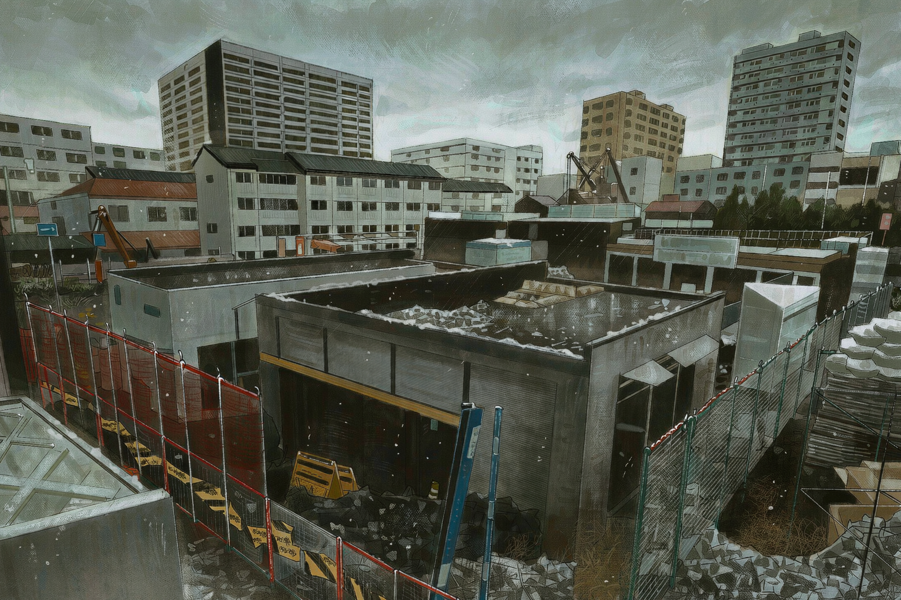
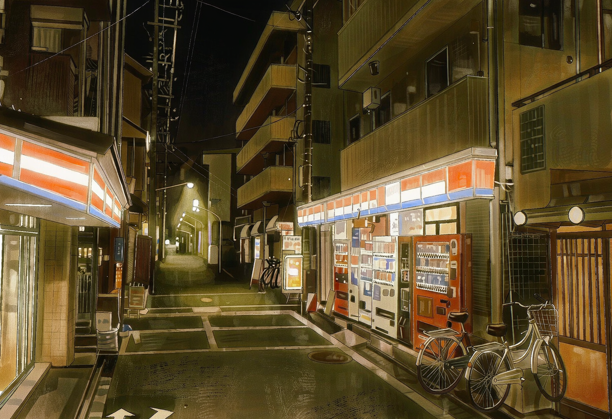
강을 건너면 도쿄가 끝난다. 그렇다고 다른 세상이 시작되는 것은 아니다.
역 앞에는 새 상업시설이 생겼고, 그 뒤편에서는 철거 날짜를 기다리는 술집이 아직 영업 중이다. 새 아파트 아래로 오래된 공장 셔터가 내려가고, 같은 시간 누군가는 야근을 끝내고 편의점에 들른다.
재개발은 도시 전체를 한 번에 바꾸지 않는다. 가게 하나가 닫히고, 집 하나가 비고, 익숙했던 골목의 이름이 지도에서 먼저 사라진다. 그래도 사람들은 출근하고, 장을 보고, 술을 마시고, 빚을 갚으며 계속 산다.
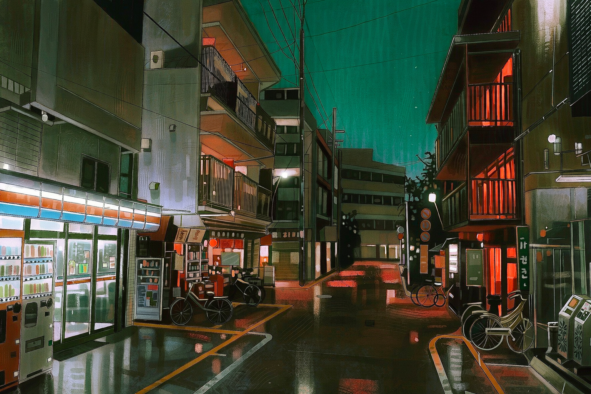
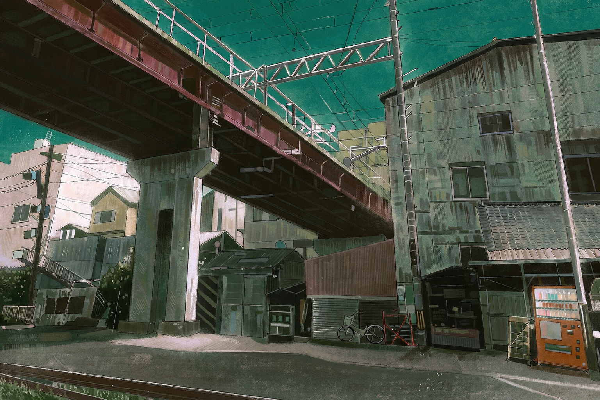
02
ENTRY POINT
A
ROUTE 01
藤堂組

첫 출근이었다.
엘리베이터는 석 달째 고장 나 있었고,
사무실은 4층에 있었다.
B
ROUTE 02
川口
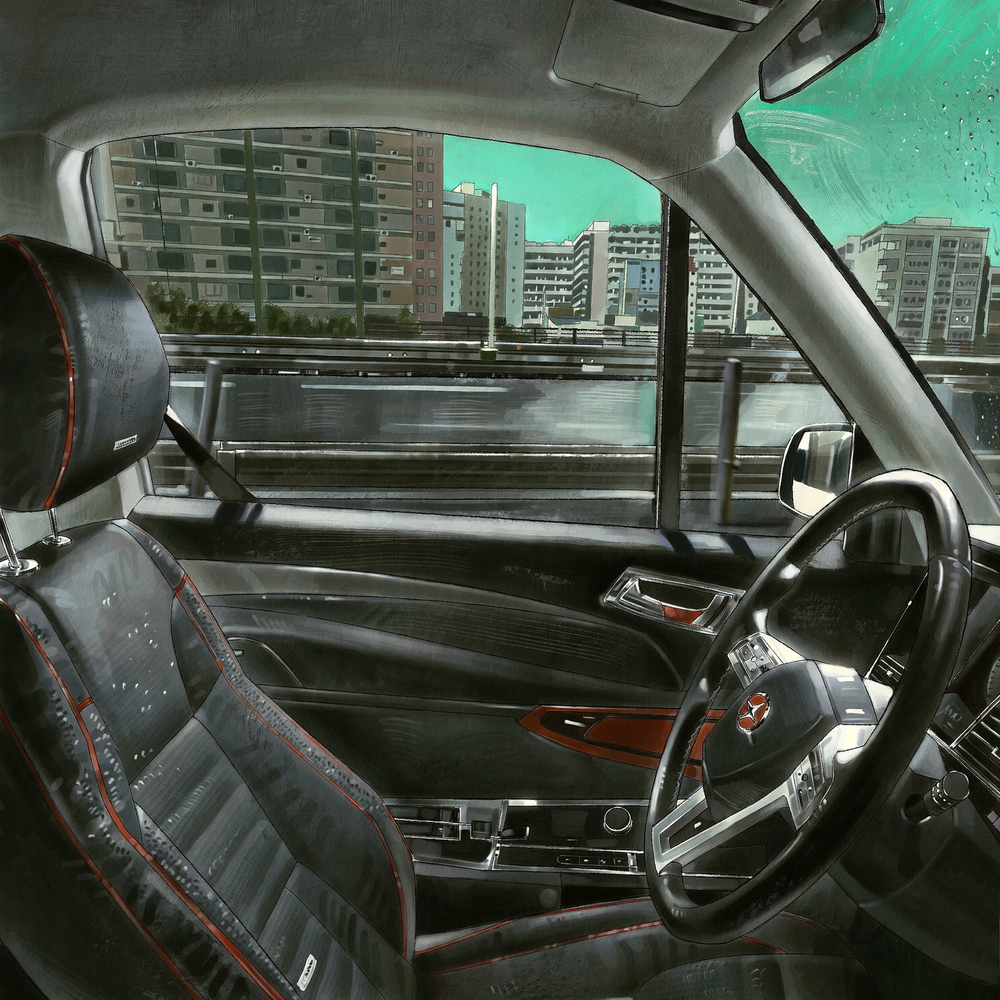
집, 일, 돈.
사소리는 그 셋 중 뭐가 제일 급하냐고 물었다.
03
PEOPLE / DOGMA
01 / CLUB OWNER
秋山 舞
49 · 카와구치 유흥가
마감 뒤에도 카운터에는 잔이 두 개 남아 있었다. 마이는 하나를 씻어 엎어두고, 건물주 이름이 찍힌 봉투는 계산대 아래로 밀어 넣었다. 내일 열어도 내용이 달라지진 않을 것이다.
DOGMA진심은 말하지 않는 편이 안전하다.
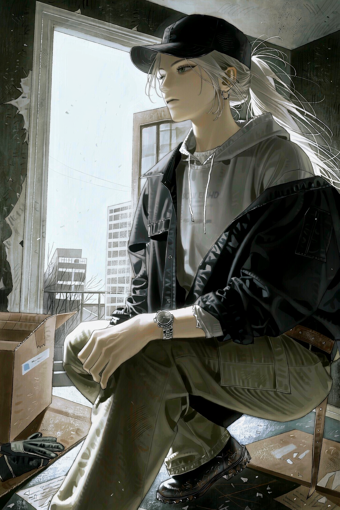
02 / FREELANCE FIXER
黒木 夏芽
32 · 회수와 정리, 남들이 미루는 일
철거를 사흘 앞둔 방에는 냉장고 하나가 남아 있었다. 나츠메는 전원을 뽑고 안쪽 냄새부터 확인했다. 가져갈 사람이 없다는 말을 듣고도 한동안 문을 닫지 않았다. 자기가 가져가겠다는 뜻은 아니었다.
DOGMA기대하지 않으면 버려질 일도 없다.
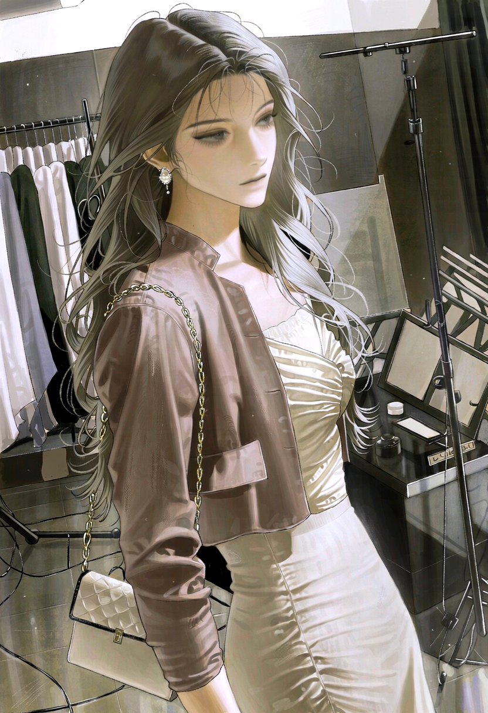
03 / MODEL
石原 菜々
35 · 라이프스타일 인플루언서
촬영이 끝난 뒤 나나는 스태프보다 먼저 귀걸이를 뺐다. 새 상업시설의 현수막 너머로, 예전에 자주 가던 가게가 있던 자리가 보였다. 잠깐 바라봤지만 다음 일정은 그대로였다.
DOGMA감정과 선택은 분리할 수 있다.
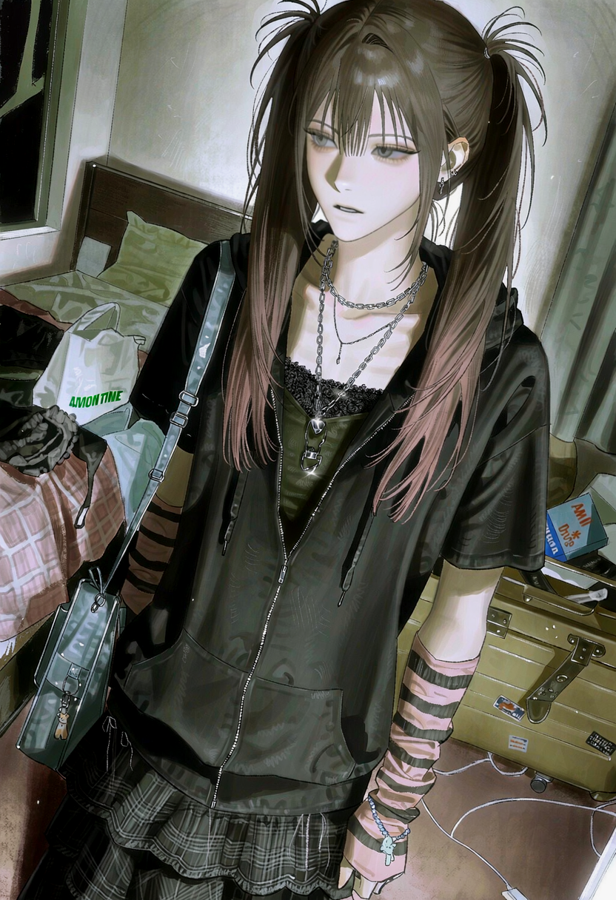
04 / TEMP WORKER
佐藤 美羽
29 · 단기알바, 리셀, 그때그때의 일
방을 잡은 지 닷새째인데도 여행가방은 반쯤 열린 채였다. 충전기는 벽에 꽂혀 있고 옷은 의자 위에 쌓였다. 미우는 택배 상자를 버리지 않았다. 다시 짐을 쌀 때 박스를 구하는 게 더 귀찮으니까.
DOGMA내 몸과 내 인생은 나만 망칠 수 있다.
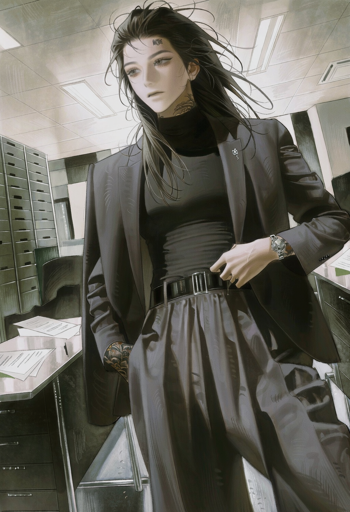
05 / 藤堂組 · KANTŌ
西 一希
39 · 토도구미 차기보스 / 관동 실무
회의가 끝난 뒤 카즈키는 서류를 먼저 정리했다. 마지막 사람이 나가고 문이 닫히자 소매를 내려 손목을 가렸다. 잠시 뒤 앞머리도 다시 내려왔다. 밖에서 마주칠 사람에게까지 설명할 필요는 없었다.
DOGMA내 배경을 알면 사람은 결국 나를 다르게 본다.
06 / BROKER
世界橋 梓
41 · 서류와 이름 사이의 일
아즈사는 계약서 한 장을 빼서 다른 봉투에 넣었다. 휴대전화가 세 번 울리는 동안 커피는 거의 줄지 않았다. 네 번째 진동이 끝난 뒤에야 화면을 뒤집어 놓고, 상대 이름을 다시 확인했다.
DOGMA진실은 필요할 때만 말하면 된다.
04
CHRONOLOGY
1970s
藤堂組
KOBE
고베에서 이전 세대가 조직의 기반을 만들었다. 이름은 남았고, 일의 방식은 시대에 맞춰 바뀌었다.
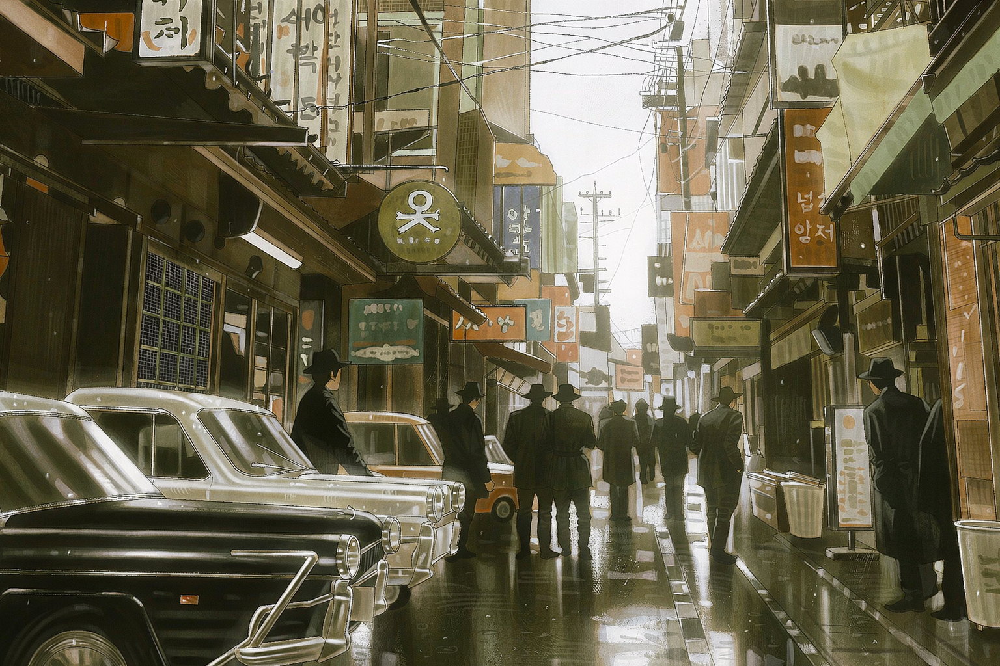
2026
黒木 夏芽 / 18
KIYOMIZU
나츠메가 열여덟 살이던 해. 키요미즈 학원은 훗날 폐교했고, 2040년에는 일부만 남아 있다.
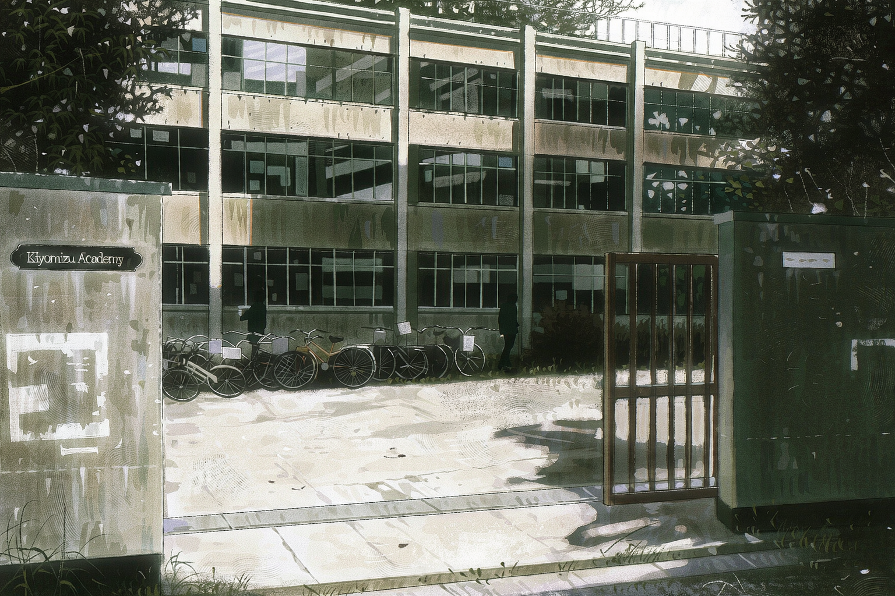
LATE
2030s
川口
REDEVELOPMENT
상점, 저가주택, 공장과 유흥업소의 폐업과 이전이 늘었다. 새로 들어오는 사람과 밀려나는 사람이 같은 구역에서 스쳤다.
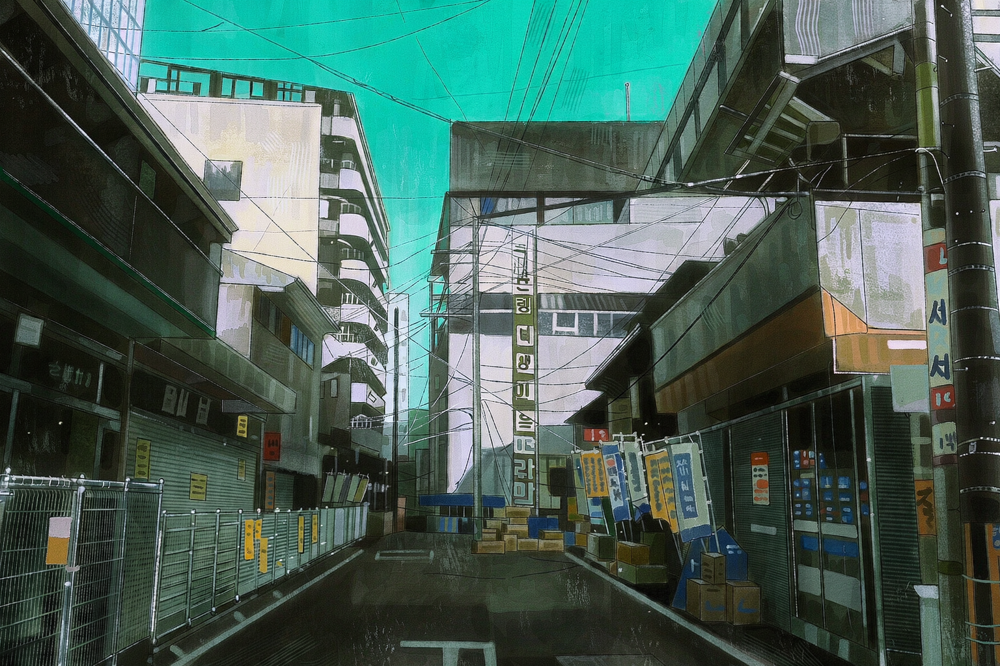
2040
NOW
KAWAGUCHI
도시는 아직 바뀌는 중이다.
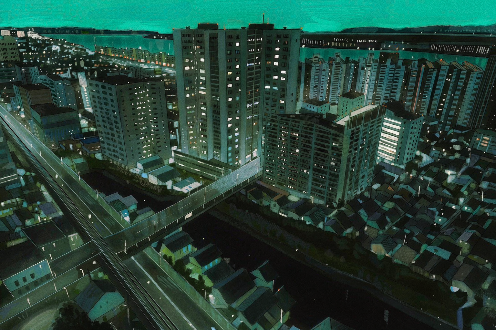